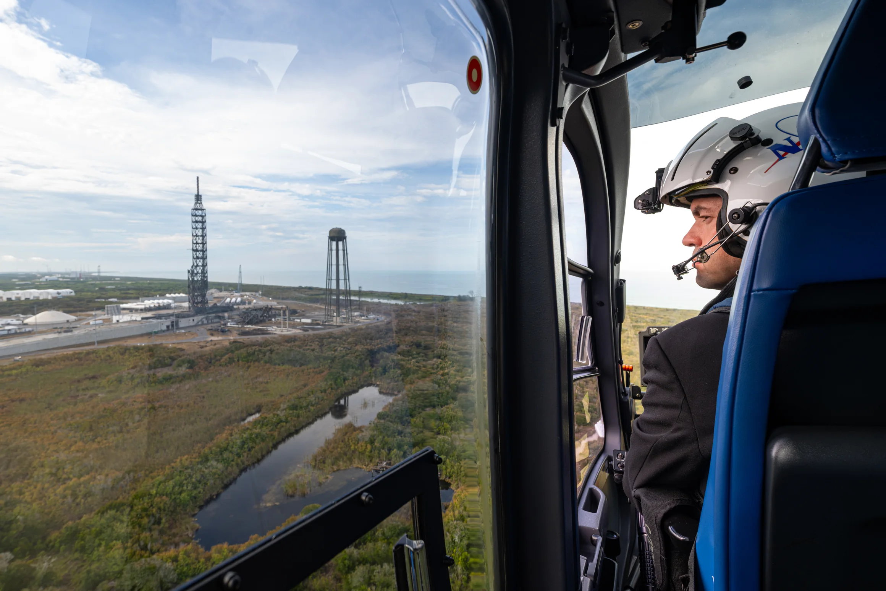
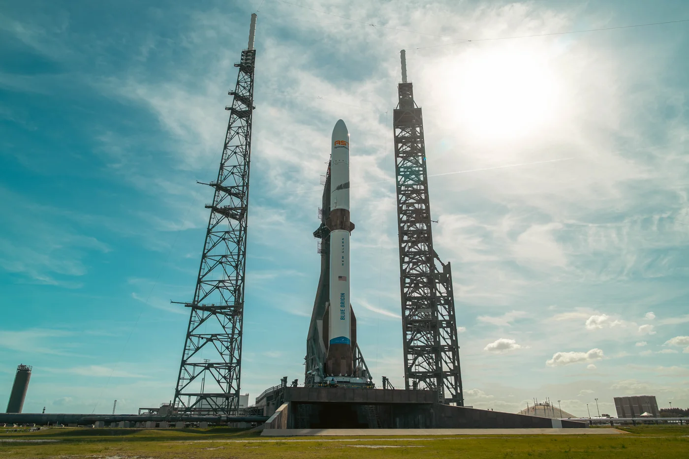

28 maggio 2026 · Cape Canaveral, Florida
New Glenn, l’esplosione al pad LC-36A
Un’accensione di prova distrusse il razzo preparato per NG-4 e danneggiò il suo pad. La ricostruzione di quella sera, dell’indagine sul BE-4 e del lavoro necessario per tornare al volo.
Aggiornato al


L’esplosione durante il collaudo
Verso le 21:00 del 28 maggio in Florida, le 03:00 del 29 maggio in Italia, il New Glenn era sulla rampa LC-36A per un’accensione statica. I due stadi erano assemblati e il razzo era trattenuto alla base. Il collaudo serviva a verificare l’avvio dei motori insieme ai sistemi del veicolo e della rampa in condizioni simili a quelle di una partenza.
Durante il test, un’esplosione distrusse il veicolo, compreso il nuovo primo stadio GS1-3. Blue Origin confermò di aver rintracciato tutto il personale. La Space Force intervenne durante la notte. Meno di dodici ore dopo, lo stesso poligono gestì un lancio di Falcon 9 da un’altra rampa. Blue Origin avvisò anche che frammenti del razzo avrebbero potuto raggiungere la costa.
Per il quarto lancio, Blue Origin aveva annunciato 48 satelliti Amazon Leo, destinati all’orbita bassa. Al momento dell’esplosione i satelliti erano ancora presso l’impianto di preparazione del carico, secondo la ricostruzione di Spaceflight Now.
Space Launch Delta 45 · Resoconto dell’intervento Blue Origin · Comunicati del 28 e 29 maggio Blue Origin · Annuncio di NG-4 Spaceflight Now · Riprese e resoconto
Come si è arrivati alla valvola
Il 30 giugno Blue Origin indicò la parte posteriore del primo stadio come area di origine. Su New Glenn 7×2, quella sezione ospita sette BE-4. Ogni motore usa gas naturale liquefatto come combustibile e ossigeno liquido come ossidante. La valvola principale dell’ossigeno regola l’ammissione dell’ossidante al motore.
-
Blue Origin localizzò l’origine dell’anomalia nella valvola principale dell’ossigeno di uno dei BE-4. L’ispezione dei componenti recuperati confermò quella localizzazione. L’azienda condusse prove sui singoli componenti e accensioni al banco per capire il guasto e verificare le modifiche.
-
La versione modificata della valvola superò le prove di qualificazione. Blue Origin dichiarò di averla già installata sui motori destinati ai prossimi voli e di aver avviato l’aggiornamento del resto della flotta. L’obiettivo comunicato era chiudere l’indagine entro novembre.
Al 17 novembre, il meccanismo del guasto interno e la sequenza completa dell’esplosione restavano senza una ricostruzione pubblica.
Blue Origin · Aggiornamenti dell’indagine GS1-3 Blue Origin · Ricostruzione preliminare di giugno Blue Origin · Scheda del BE-4
Che cosa rimase della rampa
Nel bilancio del 30 giugno Blue Origin indicò la perdita di una torre parafulmine, del trasportatore che sollevava il razzo in verticale e dei cilindri idraulici. La torre di servizio del veicolo aveva danni riparabili. Rimasero utilizzabili il parco serbatoi, la torre dell’acqua e l’edificio di integrazione.
Nell’edificio c’erano tre secondi stadi e il booster Never Tell Me The Odds, già usato su NG-2 e NG-3. Blue Origin trasferì quei mezzi mentre rimuoveva i detriti e recuperava componenti sul pad. A fine giugno dichiarò concluse le operazioni di recupero e sgombero.
Blue Origin · Bilancio dei danni e recupero

Come cambia il lavoro al pad
L’azienda ha anticipato per LC-36A una procedura che stava già sviluppando per il secondo pad. L’assemblaggio dei due stadi resta orizzontale nell’edificio di integrazione. La movimentazione sulla rampa cambia in tre passaggi.
- Trasporto. Il veicolo assemblato raggiunge la rampa in orizzontale.
- Sollevamento. Una gru lo ruota e lo posa sulla piattaforma di lancio. I collegamenti dalla torre vengono agganciati al veicolo.
- Carico. Il carico viene installato in cima al razzo già in verticale.
In agosto Blue Origin ha annunciato i lavori di LC-36B, previsto per la variante 9×4. LC-36A resta destinato al 7×2. Intanto la FAA ha pubblicato una bozza di valutazione ambientale per la proposta di passare da 12 a un massimo di 50 lanci annuali a LC-36A.
Blue Origin · Procedura di integrazione Blue Origin · Il secondo pad FAA · Valutazione ambientale
Il ritorno al volo e le missioni in attesa
A giugno il piano di Blue Origin puntava a un rientro entro la fine del 2026. Nell’aggiornamento del 16 ottobre l’azienda dava ancora LC-36A in ripristino. Il 5 novembre Reuters ha riferito di un obiettivo interno per gennaio 2027, sulla base di un memo aziendale consultato dall’agenzia. L’aggiornamento pubblico del 10 novembre riguarda la qualificazione della valvola e la chiusura dell’indagine.
Il ritorno al volo interessa anche il programma lunare. Il calendario NASA indica il 2027 per Endurance, il primo Blue Moon Mark 1. Sempre nel 2027, Artemis III prevede una prova di aggancio fra Orion e un veicolo di test del Mark 2 in orbita terrestre. La preparazione del lanciatore e quella dei due lander procedono come collaudi distinti.
Blue Origin · Aggiornamento del 16 ottobre Reuters · Il memo sul ritorno al volo NASA · Calendario di Endurance NASA · Profilo di Artemis III